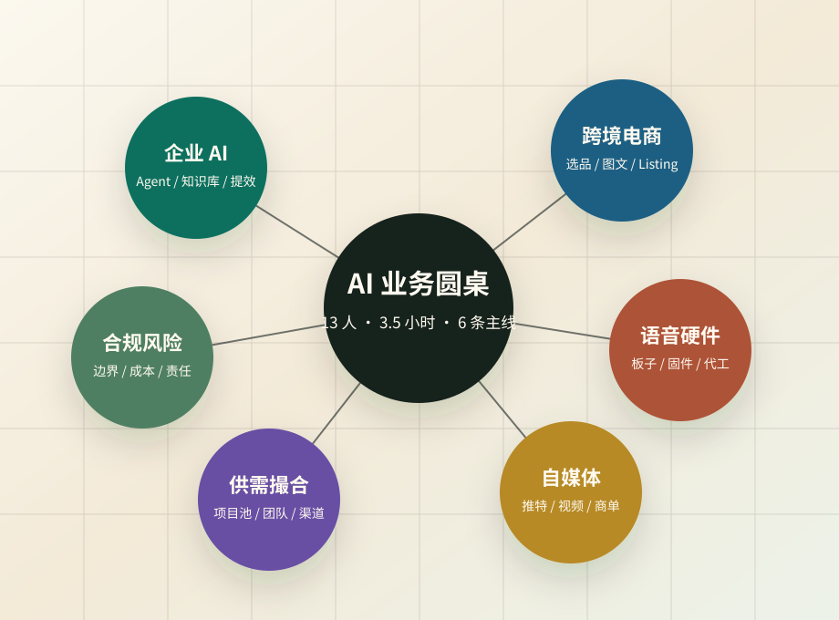

推荐标题
我用 30 天在 X 上打开了自己的线上社交圈：7 个动作，帮我从陌生关注走到线下见面
Actions
这场会议不是“听完就结束”，而是应该转成跟进表、私聊话术、文章选题、合同模板和项目筛选标准。下面按优先级整理。

Follow-up
字段建议：人名、业务方向、资源、需求、你能提供什么、下一步动作、优先级、是否已私聊。优先标记蓝叔、强子、AI 奶爸、杰胡、林杰、何老师。
建议定位为“AI 语音硬件方案商 + 代工 + 增值服务设计”，不要泛泛说 AI 机器人。重点场景：车载、桌面、美妆陪伴、录音笔、智能家居。
硬件项目必须在早期明确样品费、方案费、NRE、最小起订量、量产分成、知识产权归属、源代码/固件边界和阶段验收。
第一类是有客户需求的人，第二类是能做交付的人，第三类是有内容和流量的人。每次私聊只问一个具体问题：你手上是需求、渠道、产品，还是交付能力？
先人工记录企业需求、产品方、交付团队和内容渠道，不急着写平台。等撮合流程跑通，再把表单、背调、项目卡和复盘机制产品化。
Twitter Article
文字记录中出现的原始方向是：“我今晚回去就写，我在推上如何线上社交。”同时提到 X/Twitter 算法偏好数字、时间、结果、第一人称真实经历，以及 How-to 型标题。
我用 30 天在 X 上打开了自己的线上社交圈：7 个动作，帮我从陌生关注走到线下见面
我在推上如何线上社交：从陌生人到饭局、合作和项目线索的一套方法。
不要写“推特很有用”。直接写一个真实场景：一次线下饭局里，大家第一次见面，却早就在推上互相认识。说明线上社交的价值不是粉丝数，而是信任预热。
7 个动作：明确个人标签、持续评论高质量内容、用真实经历发帖、私信不求人脉只给话题、推进语音/线下、记录人脉表、用小合作验证关系。
线上社交不是认识很多人，而是让别人知道你是谁、你能解决什么问题，并在合适的时候想到你。
Message Template
今天聊到你那边有硬件/AI 落地相关机会，我这边主要做 AI 语音对话机器人的方案和代工，能覆盖车载、桌面、陪伴、美妆、录音笔这类场景。
我想先对齐三个问题：你手上更偏渠道、客户，还是具体产品需求？目标用户和预期售价大概是什么区间？你希望我提供样品、方案，还是完整交付？这周可以约 20 分钟，我帮你判断一下能不能做成。
Risk Checklist
尤其是硬件方案、量产、渠道商和投资人合作，先把知识产权和付款节点写清楚。
先做小流程试点，用真实数据判断 ROI，避免被客户期待绑架。
公开页面可以保留复盘和线索，但不放逐字稿全文、私密资产、联系方式和可复制的高风险细节。